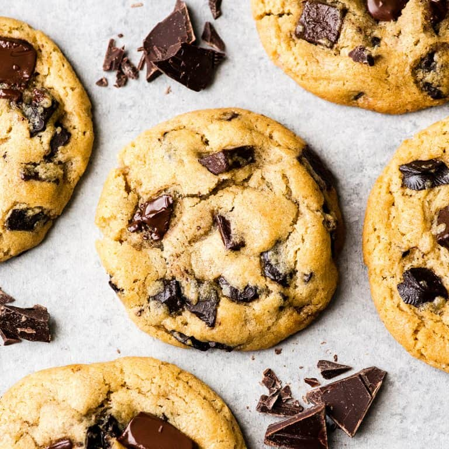

Home
Chocolate chip cookies

Description
This is the best chocolate chip cookies recipe ever! No funny ingredients, no chilling time, etc. Just a simple,
straightforward, amazingly delicious, doughy yet still fully cooked, chocolate chip cookie that turns out
perfectly every single time!
These are everything a chocolate chip cookie should be. Crispy and chewy. Doughy yet fully baked. Perfectly
buttery and sweet.
Ingredients
- 227 g salted butter softened
- 232 g granulated sugar
- 213 g light brown sugar packed
- 2 tsp pure vanilla extract
- 2 large eggs
- 410 g all-purpose flour
- 1 tsp baking soda
- 1/2 tsp baking powder
- 1 tsp sea salt
- 396 g chocolate chips (12 oz)
Steps
- Preheat oven to 375 degrees F. Line three baking sheets with parchment paper and set aside.
- In a medium bowl mix flour, baking soda, baking powder and salt. Set aside.
- Cream together butter and sugars until combined.
- Beat in eggs and vanilla until light (about 1 minute).
- Mix in the dry ingredients until combined.
- Add chocolate chips and mix well.
- Roll 2-3 Tablespoons (depending on how large you like your cookies) of dough at a time into balls and place
them evenly spaced on your prepared cookie sheets.
- Bake in preheated oven for approximately 8-10 minutes. Take them out when they are just
barely starting to turn brown.
- Let them sit on the baking pan for 5 minutes before removing to cooling rack.